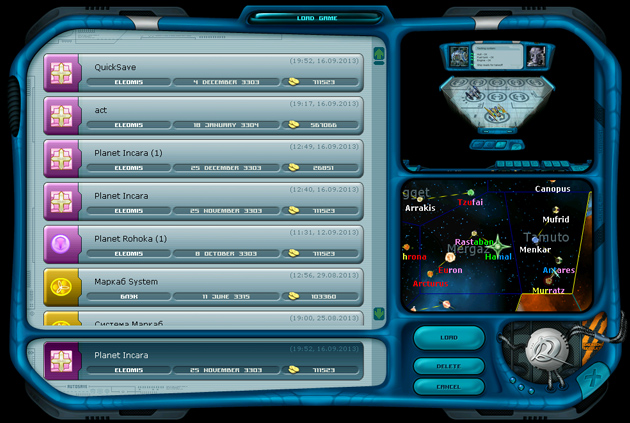

Ranger manual > Main menu
screen > Load game
|
Ranger manual > Main menu
screen > Load game
|
| Load game Here you can load one of the previously saved games. You can also load an autosave game, which contains the record of your last successful landing on a planet (always located in the separate bottommost slot). Besides here you can delete those previously saved that you do not need any more. |

|
To load a game: • Double-click on the save slot or select the slot and press "Load". Note. In the upper right corner of each slot you will see the time and date of this particular save. The file of turn-based saving is called TurnSave (the texts of the note is set up in the game settings). Quick load - key F8 (Note. First you need to make a quick save - key F5). To delete an unwanted game: • Select the slot with the game you want to delete and press 'Delete'. Game saving happens on the same screen, just the button "Load" is replaced with "Save". When saving a game you can name it whatever you want. All saved games are located in the Save folder of the game catalogue and all files have the same names like in the game. In the Save folder you can also delete or rename your saved games. The combination of keys Shift + Backspace allows to delete the entire text in the save name. In the right part of the load window there are two screens: the upper one shows the game screen, where you made a save, the lower one - the position of the system, which you were visiting at the moment of the saving. |